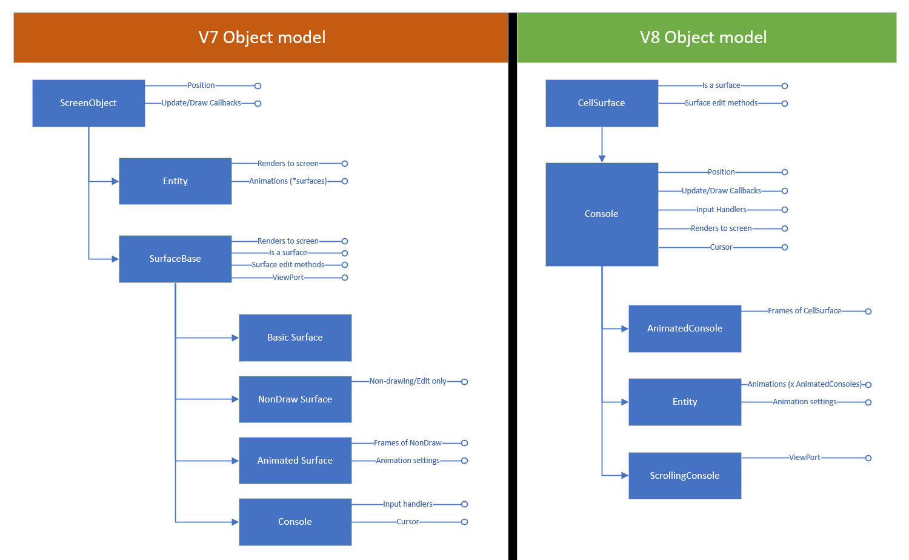

Upgrade your code from V7 to V8
Functionally, SadConsole v8 is similar to SadConsole v7. Some namespaces have been removed and a few classes have been renamed. All of the same capabilities that used to exist, still exist, they have must been moved around.
Overview
The base object hierarchy has changed. Previously, input could only be sent to a Console type. However, the base object drawn and updated by SadConsole was the ScreenObject type, which Console eventually inherited from. Objects like Entity do not inherit from Console, but they do inherit from ScreenObject. This means that the Entity could not be targeted with the standard mouse/keyboard events. You would have to watch for mouse/keyboard in the Entity.Update callback.
For SadConsole v8, 90% of all objects can be now targeted as for mouse/keyboard input without any extra Update handling. Enabling this capability meant moving the object hierarchy around, and, eliminating some useless classes after the move. The following diagram demonstrates the object hierarchy for V8.

As you can see, the main object used by SadConsole V7 was the ScreenObject, but the only capabilities it provided was Positioning and Update/Draw Calls. Input was handled by Console, further down the object hierarchy.
With V8, 90% of the functionality has been moved to Console, and all other core objects (such as Entity) inherit from Console. The main difference between Console from V7 to V8 is that the ViewPort is no longer supported and has moved to a new console type: ScrollingConsole.
Terminology has also changed. No longer is the word Surface used for everything, the word Console is used instead. This makes it easier for people to understand what the object's intent is.
Namespaces
The following namespaces have been removed.
| Name | Replacement | Why |
|---|---|---|
| SadConsole.Surfaces | SadConsole | Different types of "Surfaces" are no longer needed. Everything is a surface now, and there are different types of Consoles. |
Types
The following types have been renamed:
| From | To | Why |
|---|---|---|
| SadConsole.ScreenObject | SadConsole.Console | ScreenObject was the base type of object used for drawing (though by default it did not draw anything) and updating. These have been moved to Console and now all "ScreenObjects" from the past are replaced with Console. This means that SadConsole.Global.CurrentScreen is now a Console. |
| SadConsole.IConsole | SadConsole.Console | IConsole was an interface to represent input, cursor, and screenobject calls, to allow other objects to act like a console. Now that Console is the main type, this interface is no longer needed. |
| SadConsole.Surfaces.SurfaceBase SadConsole.Surfaces.Basic |
SadConsole.CellSurface | A CellSurface represents what Basic used to. You can use this surface to print and alter cell data without rendering. It acts like a temporary buffer when used directly. It is used as the base class for Console, and Console brings rendering. |
| SadConsole.Surfaces.Basic | SadConsole.CellSurface | A CellSurface represents what Basic used to. You can use this surface to print and alter cell data without rendering. It acts like a temporary buffer when used directly. It is used as the base class for Console, and Console brings rendering. |
| SadConsole.Surfaces.Animated | SadConsole.AnimatedConsole | Surfaces don't exist in the same way anymore; all objects are consoles. |
| SadConsole.Surfaces.BasicNoDraw | SadConsole.CellSurface | BasicNoDraw let you change cells and acted like a buffer, but without hitting the GPU. CellSurface, the base type for Console does this too. |
| SadConsole.Surfaces.Layered | SadConsole.LayeredConsole | Naming purposes. |
| SadConsole.ConsoleContainer | SadConsole.ContainerConsole | Renamed to follow the naming convention of the other console objects. Cursor is disabled; it's size is 1x1; the RenderResult for the GPU is not created. |
Control themes
Controls have been adjusted. Instead of all controls pulling a default theme from SadConsole.Themes.Library.Default, the hosting ControlsConsole or WindowConsole has a theme library associated with it. A control will pull its theme from the hosting console's library. This goes for colors too. This way, you can adjust the colors or control theme for the console as a whole, and all controls (only for that console) are affected. You can also assign a theme directly to a control instance, which overrides the theme auto assigned by the host console.